Boy Scouts

Boy scouts has been responsible for most, if not all of my camping experience. I have also done most of my public service through boy scouts as well. That public service includes many hours of work dedicated to scouting for food, and the Feed the Homeless initiative. I'm an Eagle Scout in troop 71, and I manage my troop's website.
My eagle scout project was a 12-foot-long footbridge at Russ Nature Reserve. Its only a few feet high, but allows water to flow underneath it, keeping water from washing away the gravel trail. My project was simplified somewhat by the Russ Reserve having other, similar bridges already installed. I also didn’t have to do a fundraiser as they already had the materials needed.
The building process was pretty straight forward. First, me, my dad and someone from the reserve cut some long sections of decking board down to be the width of the bridge. Doing this left some short 6-inch sections of decking board that was later used to build a kick board. The base of the bridge was made by setting 2 very thick lengths of wood at either end of the bridge and setting them in gravel. 2 6”x6”s running the length of the bridge were then screwed into these pieces. Then the decking boards were laid out on top, spaced out evenly and screwed into the 6”x6”s. The scraps from earlier and 2 uncut boards were attached at the edges of the bridge to prevent people from sliding off during the winter.
Robotics
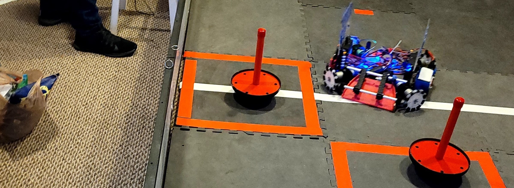I am an engineer on FTC team 12653 Robot Legion. This is my first year of formal robotics activities, but I have been practicing robotics on my own time using the Lego technic Ev3 kit in tandem with custom 3d printed parts. It’s easy to see the word “Lego” and shrug it off as a kid’s toy, but the Ev3 system is surprisingly capable. The motors have real encoders that let you control the robot with a surprising degree of precision, and the visual scripting language is powerful enough to handle complex tasks like autonomous navigation or closed-loop feedback control.
Blender
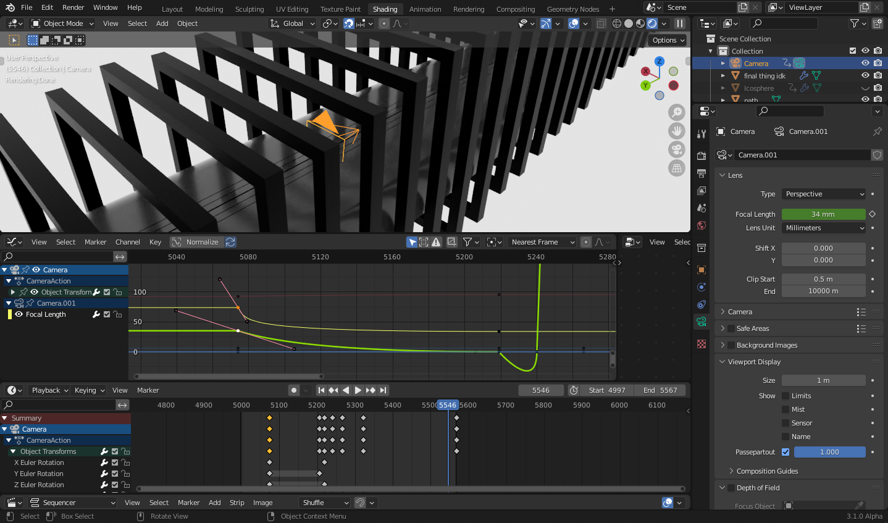I’ve been using Blender for about a year now and I have used it on many projects. I can model, texture and animate pretty well. You can find examples of my work with Blender on my 12-grade page. I also have some big video projects in the works, so look out for those as well.
Internship
Introduction
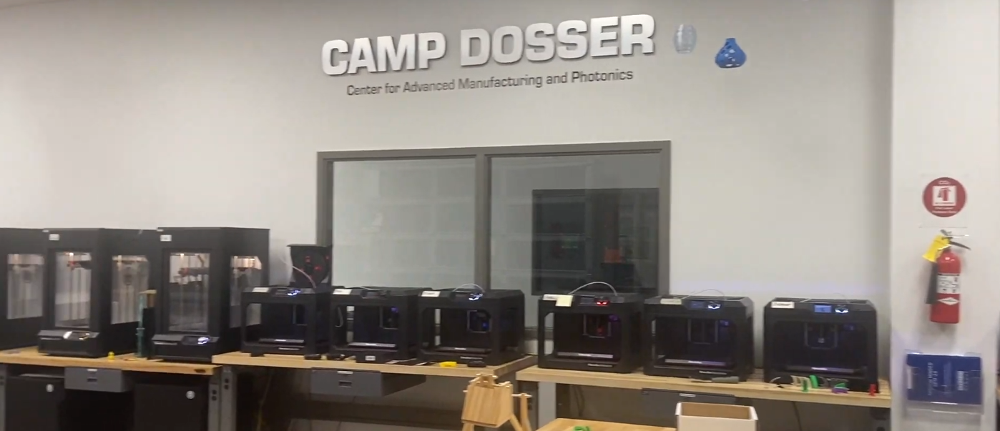The internship program allows DRSS students to get real workplace experience at a relatively early age. It is preceded by the job shadow program, which is one day long and introduces students to the process of working with 3rd parties. It is required for graduation.
The program requires us to set up an internship of at lest 10 days in length. We are given instructions, guidelines and advice, but we must find at least one partner to contact and collaborate with to get the internship done. It can be done during the school year, or it can be done during the summer.
Career Exploration Report
The career exploration report sent DRSS students on a documented deep dive into a career field of our choosing. This helped us better understand the nature of our chosen career fields so that we could make more informed career decisions later down the line.
Internship Log
I did my internship at an area in my school called CAMP Dosser. CAMP is an acronym for “Center for Advanced Manufacturing and Photonics,” Dosser is the last name of the person who funded the project. CAMP Dosser is equipped with all kinds of high-tech machinery including 3D printers, laser cutters, CNC mills and large-format vinyl printers.
The internship was meant to take place over the summer, but Covid restrictions necessitated some adaptations. I had taken a class that was somewhat similar to the internship called CAMP Dosser experiential learning where I would help run and maintain the machines there. The summer internship was effectively canceled, and I was instructed to write my logs about things that I did or learned during this class, rather than daily logs, as there are too many days in a school year to practically log every single one.
Log 1: MakerBot extruder troubles
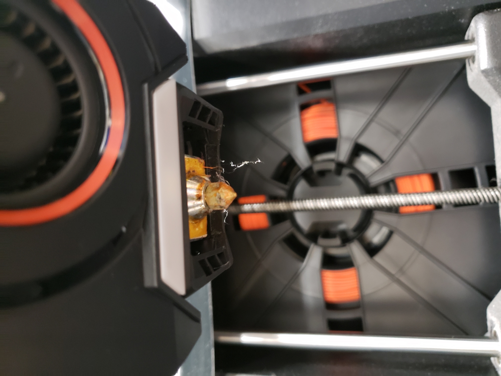Probably the #1 issue we have with the MakerBot 3D printers is with the extruders. They attach magnetically to the mechanism which makes them easy to swap out. They frequently jam, which means someone has to take them apart and yank out the stuck filament. Some issues are a bit larger, though. They usually start to have issues with calibration and filament slips after 200-300 hours of printing. The causes of these issues are hard to pin down and nearly impossible to fix, so usually the best course of our time is to just swap the malfunctioning extruder with a new one. I have unjammed at least 20 extruders and attempted more advanced repair once, though we will get into that later.
Log 2: Laser cleaning
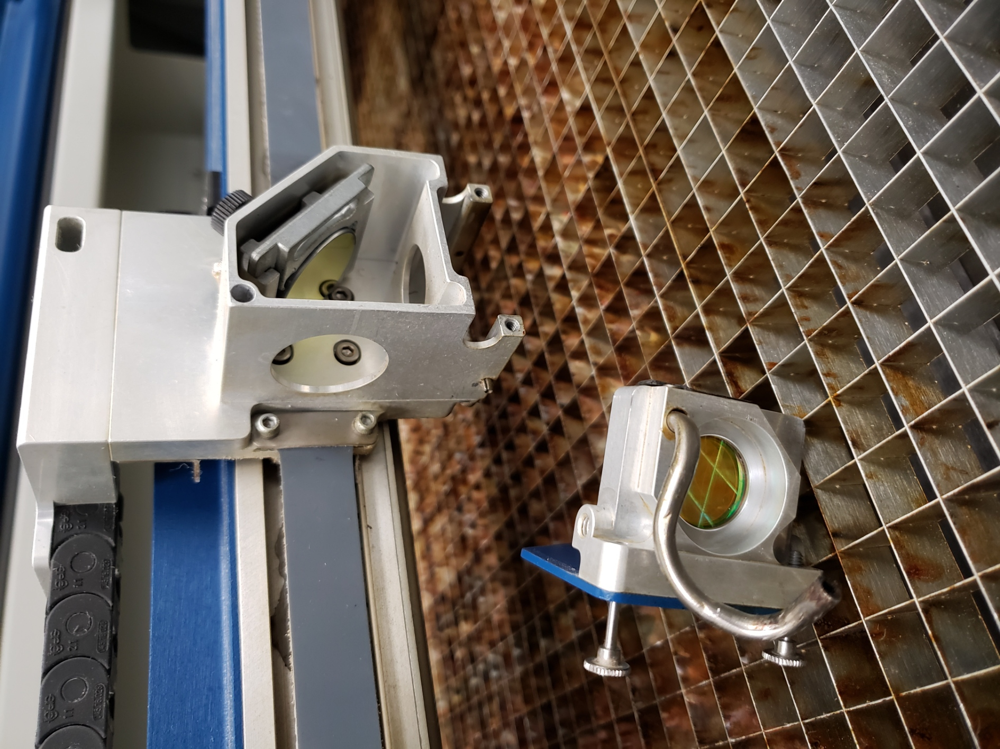In order to cut through thick sheets of material, the 50-watt lasers used in both of the laser cutters are far too large to be mover around by the mechanism. To work around this, the lasers use mirrors to redirect the beam from the stationary laser tube to an end effector that moves around the workspace. When the laser is operating, it vaporizes the material in the path of the beam. This, of course, creates vapor. The vapor can get in the way of the laser beam and accumulate on the mirrors, reducing the performance of the laser cutter. There are various mechanisms to deal with most of the smoke, but they are not 100% effective all of the time. Periodically we have to remove the mirrors and lenses from the laser and clean them using either acetone or a mixture of vinegar and water. Acetone evaporates quickly and entirely and is used in most cases. Some surfaces require additional cleaning, which is where the vinegar-water solution is used. It can take of more stubborn residues but requires careful drying afterward.
Log 3: Vinyl printer cleaning
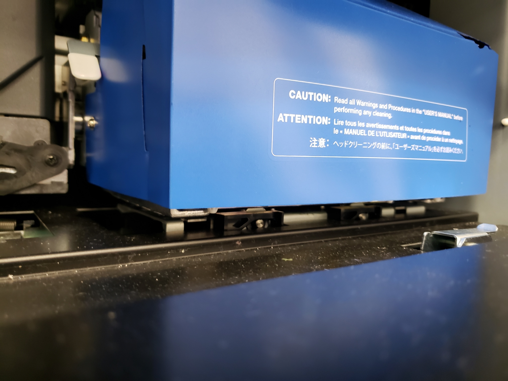The vinyl printers are effectively scaled up desktop inkjet printers. However, with more ink comes more mess. They have automated mechanisms that clean the actual print heads, but the areas around the heads can get caked in ink residue, making manual cleaning a regular and time sensitive event for the vinyl printers. Should the residue get a chance to dry, it can cause issues for the automated cleaning mechanisms. So, every once in a while, the printer will notify us that it needs to be cleaned. We clean it by dipping a special swab in a secret sauce solution and swiping it along the sides of the print heads, careful not to touch the business end of the head. Sometimes we also need to clean the cleaning mechanism. Funny how that works.
Log 4: MakerBot extruder home repair attempt
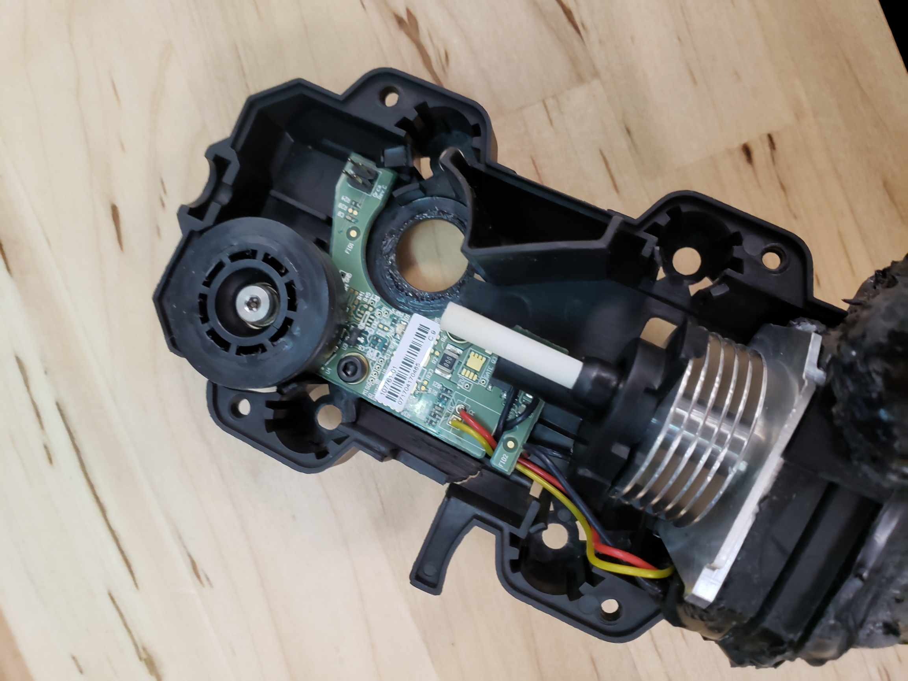At one point, we were running low on functioning MakerBot extruders. I took 2 broken extruders home and attempted to swap out some parts on the extruder. One extruder was jammed with foreign debris and would be difficult to unclog, but the electronics were still functional. The other was lightly used but had bent and broken connection pins. My plan was to swap the metal hotend assemblies, theoretically making one functional extruder. I successfully de-soldered and re-soldered the metal assemblies, then reassembled the functional extruder and collected the nonfunctioning parts in a plastic bag, returning both to school the next day. When I tried the repaired extruder, the printer displayed a message saying the extruder was counterfeit. Basically, what happened here was a security measure put in place by MakerBot had a false alarm. I am not aware of any way to work around this problem, meaning that our chances of fixing extruders ourselves past yanking out stuck filament are basically zero. Needless to say, we were not very pleased with the design of the MakerBot printers.
Log 5: Fiddling with the 3d scanner
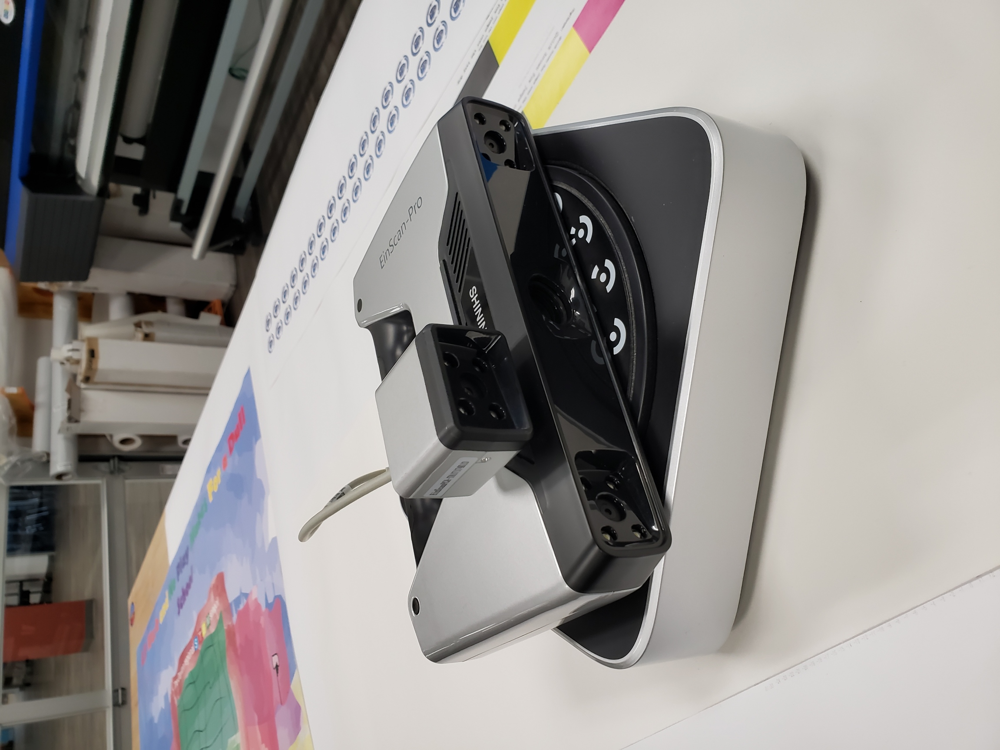A 3D scanner is a very useful tool to have when you just need to duplicate an object, potentially saving us the effort of manually modeling an object. The scanner itself is in a handheld form factor, but it is most useful when mounted in a tripod. The scanner came with a special mount that lets us do just this and is used in combination with an automated turntable. While the scanner is somewhat simple to set up, there are all kinds of parameters that need adjusting in order to get a good scan. A feature of the software that I had not known about previously was the ability to combine data from multiple scans. This is a very important feature, but I had not been able to figure it out when I last operated the scanner in 9th grade. Using this functionality, I was able to get a complete scan of a little dog toy that I had been using as a test piece.
Log 6: Ender 3 wiggle fix
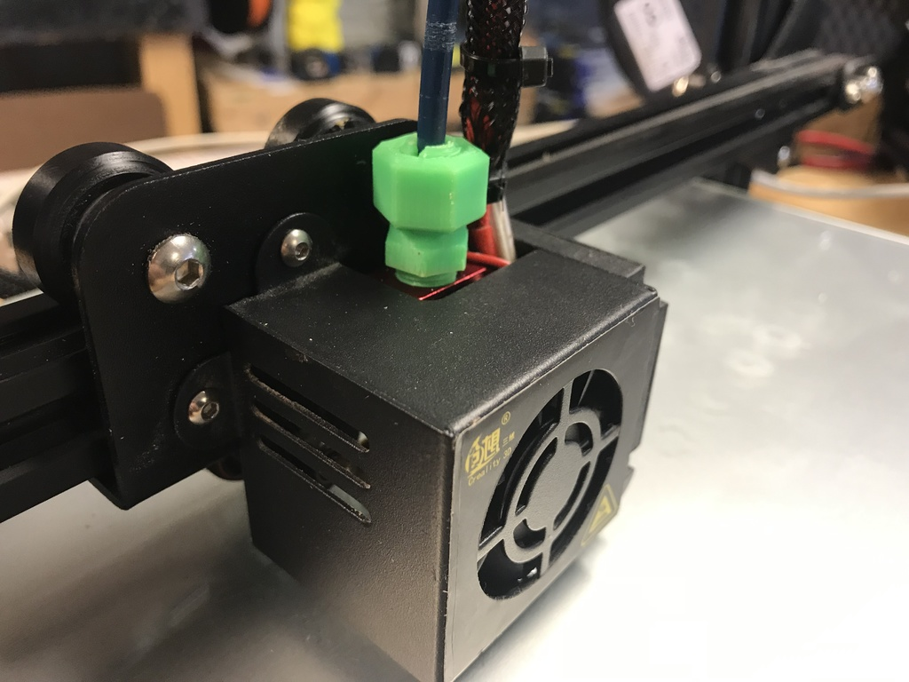The CAMP Dosser manager at the time had a 3D printer with a few issues that he had been talking to me about. 3D printers were kind of my specialty, so we decided that he would bring the printer in so I could take a look at it. The issues in this case were awful and inconsistent print quality. I quickly recognized the issue to be a loose roller on one of the axes, allowing the print head to wiggle around a few millimeters. Not what you want on a mechanism that needs to move precisely at high accelerations. The fix was simple. I took the head off the rail and loosened all the rollers. Then, while holding the rollers in towards each other, I tightened them back down. This resulted in a nice, smooth movement with no perceptible play. After this the print quality was vastly better.
Log 7: Using the laser cutter
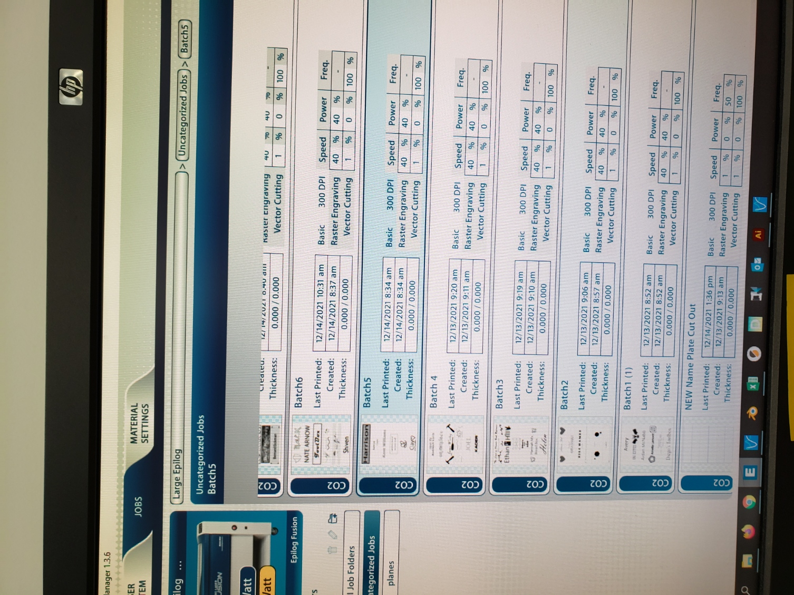Our laser cutters are made by a company called Epilog. They have a pretty odd way of managing cut jobs that is more geared towards the graphical design process. The laser cutter has an application that pretends to be a printer. You either make or import a design to a graphical design software like Adobe Illustrator or Corel draw, then print the design with the laser cutter selected. The application will then add the job to a list. Job settings can be changed in the Epilog software. Once everything is dialed in, you send the job data to the laser cutter. Then, you load in your material, hit go, wait a bit and your finished product will be waiting for you. Do know that this description is abbreviated a bit.
The laser cutters are somewhat limited in the ways they can accept designs. For a teacher to use them effectively, they have to be very diligent about how their students should go about doing their work. More often than not, we receive jobs that are not ideal for laser cutting because of the unexpected complexity of the laser cutting process.
Log 8: Using the vinyl printer (software)
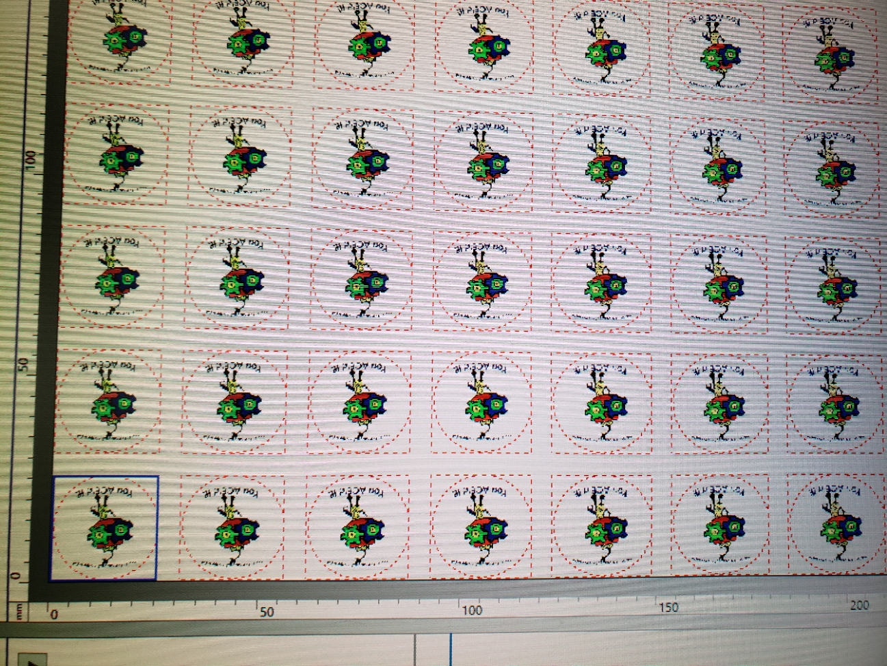Surprisingly, the vinyl printers operate in a less printer-like way than the laser cutters. They are operated exclusively through a specialized piece of software that designs are imported into. The printers have various cutting capabilities that are controlled in this software. We can queue up multiple jobs and have the printer cut the sheet of material before starting on the next one. There is also a very small and very sharp blade that can cut out stickers, or anything else with a backing for that matter. There are various settings for print quality, material type/width, print quantity, print orientation, the list goes on. This process is much more versatile than that of the laser cutters, as people can send us anything from a PDF to a PNG and the software will handle it without issue.
Log 9: Using the vinyl printer (hardware)
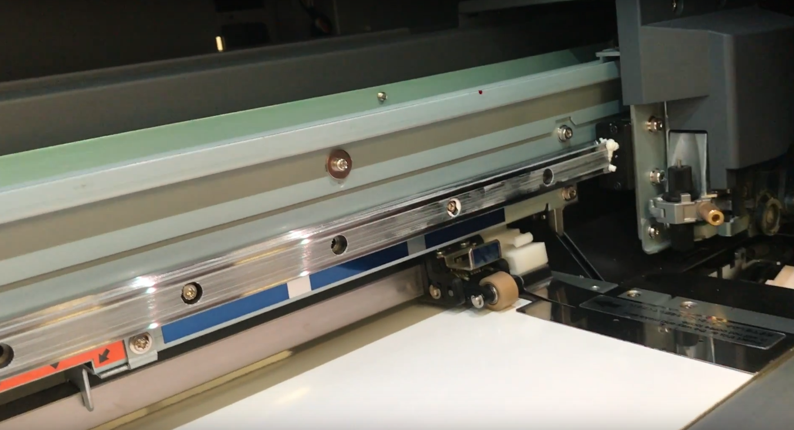Putting material into the vinyl printers can be quite a chore, especially with larger spools of material. There are material release levers on both sides of the machine, as there is usually one person on either side. Before doing anything, we have to make sure that what is currently in the printer is clean. Any canceled jobs must be cut off and discarded, making sure to leave a straight edge on the material. Anything less, and the process of loading the material back into the printer will be much more difficult. Once the material is out, we select an appropriately sized roll of the desired material from our collection. We clamp the roll into the holder at the back of the printer, and then feed it through to the other side. For this to happen, one person has to hold the material in place at the back while the other make sure it doesn’t get caught on anything as it makes it way though the mechanism. Then, various rollers and clamps are put in place, securing the material into the printer.
The length of the process influences the way we manage jobs. Sometimes we will wait to do a job that requires a different material if we know that a job uses the current material will be submitted later that day.
Log 10: Laser cutter troubleshooting
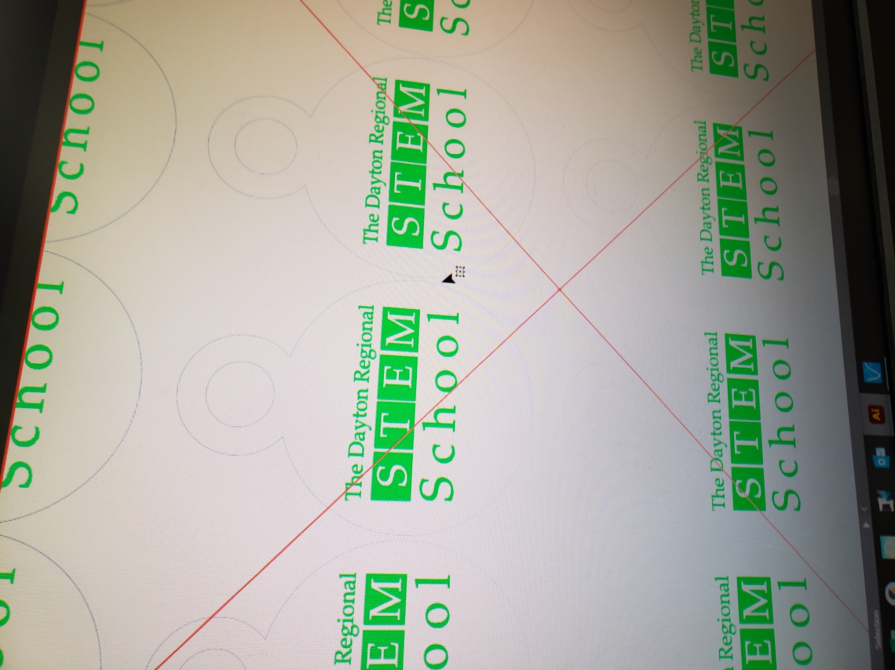The software for the laser cutters has a few quirks, especially when using the smaller of our cutters. The most prominent of these issues is that image data cannot be combined with vector data. What this means is that if we wanted to engrave a PNG or JPEG image and then cut out the engraving with a vector shape, we would have to run those as two separate jobs. One that engraves the image, another that cuts it out. We initially thought something was wrong with our equipment, but after a good bit of troubleshooting we were able to work around the limitation.
Another issue that is specific to the smaller cutter is a bug with vector paths where the laser will sometimes return to the origin point while interpolating between points in a vector path. The interpolation process is a very complicated one, and it would appear that Epilog has made an error.
Reflection
My experience in this field started with my Anet A8. The A8 is a 3D printer kit that requires lots of assembly. I encountered all kinds of issues with my printer, but these encounters gave me valuable skills that cannot be taught. The A8 trusts that if you were smart enough to build it, you are smart enough to fix and operate it. There is nothing stopping me from replacing major parts of that printer. Unfortunately, this is not true for all machines. All the equipment currently in use at CAMP Dosser required minimal assembly. To a certain extent, I see this as a bad thing. However, this didn’t stop us from completing that year’s cube stand project on time. Despite the MakerBot printer’s limitations and unreliability, we finished printing all the students’ designs by keeping all of our working printers as busy as possible.
I only spent the last period of the day in CAMP Dosser, so anything that wasn’t mostly done by the time I got there had to be something big. Mr. Roberts has a project that involves lots of unique paper pieces. He used to have students cut out the pieces, but this was a slow process that was easy to mess up. He has us use the laser cutters in a very creative way where we use them to quickly cut out batches of these small paper pieces. We would tape pieces of cardstock to a sheet of plywood, load it in the laser and have it cut out all the shapes flawlessly. The problem is that all the batches of pieces then need to be separated into bags. This is a very delicate process that I was in charge of during my period. I had to work quickly to keep up with the laser cutter while still being careful not to mix up any pieces. Thanks to this experience, I was able to effectively lead the same project again this year.
During my time at CAMP Dosser, I attempted to figure out the complicated software accompanying our 3D scanner. I already knew how to perform a single scan; however, they had updated the software with a more intuitive interface since the last time I had attempted to use it. This update caused me to notice a little button that allows you to combine data from multiple scans. The process of doing this required some additional deciphering, but by the end of the week I had the scanner figured out and was able to make print-ready models of existing objects.
My plans for college going into the internship were to major in some kind of engineering, though I was not sure of a specific field I wanted to go in to. I enjoyed most of my time at CAMP Dosser and know a lot more about non-3D printer machines than I did before. While it has taught me how to operate new kinds of machines, technology moves quickly. I would not be surprised if a new, revolutionary manufacturing method came along with a whole new set of complicated equipment following it. The most important thing CAMP Dosser has taught me is the ability to figure out new machines and make them work at their best. I feel that this will put me in some interesting places later on, either building the next big manufacturing method from the ground up or using it to do something even bigger.